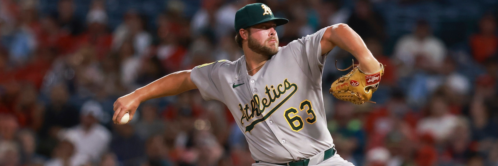

Kansas City is 51-74. Oakland is 49-75. Put the two together and you have forty nine games under .500 sharing one Monday night in Missouri, and a market that has decided one of them is a 63.6 percent favorite. That number is the whole story of this card.
Prices like that on teams like these are not sentiment. They are a read on two specific arms and the two bullpens sitting behind them, and both of today's plays are the same bet made twice: back the side that throws strikes, against the side that does not.
| Play | Line | Odds | Stake | Game |
|---|---|---|---|---|
| Kansas City Royals moneyline | Moneyline | -175 | 3.0 units | ATH at KC, 7:40 PM ET |
| Boston Red Sox moneyline | Moneyline | -132 | 1.5 units | ARI at BOS, 7:10 PM ET |
The card risks 4.5 units to win 2.85. The Royals moneyline is logged on the BetLegend record at TrustMyRecord as ticket TMR-0004343 at that exact price. The Red Sox position was taken at -132 and is tracked on the same card. Two plays out of eleven games is a narrow board by this site's standards, and the concentration is deliberate: the rest of Monday's slate does not offer a price this far away from the underlying arms.
Michael Wacha has thrown 150.2 innings across 24 starts. That is 6.28 innings a night, and it is the number that matters more than his 5-8 record. Behind it sits a 3.46 ERA and a 1.15 WHIP, and the last five turns have been better than the season: eight earned runs across those five starts, a 2.30 mark, and seven walks total.
Read that game log in order. Six innings and one run against San Francisco on July 20. Seven innings and two runs against Detroit on July 25. Six innings, zero walks, seven strikeouts against Colorado on July 31. Then 5.2 against Minnesota on August 6 and 6.2 innings on 96 pitches against the Dodgers on August 11 without a walk. A starter working that deep on that few free passes changes what his bullpen is asked to do, and Kansas City's bullpen, attached to a 4.78 team ERA, needs the help.

Mason Barnett has made three starts in seventeen appearances and has walked 20 of the 167 hitters he has faced this season.
Mason Barnett answers, and he is the reason the number is -175 rather than -130. Barnett has made three starts in seventeen appearances. His season line is a 6.16 ERA and a 1.45 WHIP across 38 innings, with 20 walks in 167 batters faced, a 12.0 percent rate, and eleven home runs allowed in those 38 innings. That home run rate works out to 2.61 per nine, which over a full season would be one of the worst marks in the sport.
The three starts run in the wrong direction. Five innings and three earned against Boston on July 30, his cleanest. Then 4.1 innings and five earned in Cincinnati on August 6. Then four innings, five hits, three walks, five earned runs and zero strikeouts in Tampa on August 11, on 67 pitches. A start with no strikeouts at all is rare enough at this level to be worth pausing on, and it is his most recent.
The staff behind him is worse than he is. Oakland's pitching carries a 5.45 ERA and a 1.50 WHIP, has allowed 714 runs and surrendered 194 home runs across 1099.1 innings. Barnett has not completed five innings in either of his last two starts, which means this game reaches that bullpen early.
The home and road split adds to it. Kansas City is 29-30 at Kauffman Stadium. Oakland is 26-35 away from its own park. Neither is a good record. The gap between them is thirteen games.
Boston is running a staff game. Alec Gamboa takes the ball having made nine appearances this season and zero starts, and his usage tells you the plan: three innings on 36 pitches against Pittsburgh on August 14, four innings and six strikeouts on 63 pitches against Toronto on July 25, three innings on 43 pitches against Tampa Bay on July 17. He has a 1.59 ERA and five walks across 17 innings. He is there to cover the front third and hand the game to the deepest bullpen in the building.
The staff numbers are the play. Boston has a 3.52 ERA and a 1.22 WHIP with 1059 strikeouts and 468 runs allowed in 1101.1 innings. Arizona sits at 4.09 with 549 runs allowed. Across nine innings that is roughly half a run of expected difference, and in a game priced at -132, half a run is the margin.
Mitch Bratt starts for Arizona with 19 walks in 143 batters faced across seven starts. A 13.3 percent walk rate is the single loudest number in this matchup, louder than his 3.74 ERA. His season splits into two halves that look like different pitchers: seven innings on one hit with nine strikeouts against San Diego on August 5 and six innings of two-run ball against Colorado on August 11 on one side, three innings and three walks against the Dodgers on July 12 and five walks in five innings against Washington on July 25 on the other.
Fenway Park is a poor place to guess which one arrives. The Green Monster converts a walk and a single into a run more efficiently than almost any wall in baseball, and Boston's lineup has 549 runs, 124 home runs and a .720 OPS behind it.
The Royals price. At -175 this needs to hit 63.6 percent, and Kansas City has scored 513 runs, the fewest of the four clubs involved, on a .242 average and a .703 OPS. That is a lineup that can be shut down by a bad pitcher on a good night, and if Wacha allows two early the game turns into a bullpen contest between a 4.78 team ERA and a 5.45, which is much closer to a coin flip than the price implies. Kansas City has lost seven of its last ten.
Boston is the stranger position. The Red Sox are 29-31 at Fenway Park and 37-27 on the road, an inverted split with no clean explanation in the run data, and they are 3-7 in their last ten with an 8-3 loss at Pittsburgh on August 16 as the most recent result. Arizona is the better team by record, 66-59, has scored more runs, 567 against 549, and won 10-3 at Atlanta on August 14. Backing Boston here is backing a pitching gap, not a talent gap, and the 1.5-unit stake against 3 on the Royals is the honest expression of that.
Fact manifest
- Kansas City 51-74, Athletics 49-75, Boston 66-58, Arizona 66-59; home and road splits of 29-30, 26-35, 29-31 and 30-32; last ten of 3-7, 4-6, 3-7 and 5-5
- MLB Stats API 2026 regular season standings with split records, pulled this session
- Michael Wacha 2026: 3.46 ERA, 1.15 WHIP, 150.2 IP, 24 starts, 117 K, 41 BB, 612 batters faced; last five starts of 6.0 IP 1 ER, 7.0 IP 2 ER, 6.0 IP 1 ER 0 BB 7 K, 5.2 IP 1 ER and 6.2 IP 3 ER 0 BB from July 20 through August 11
- MLB Stats API 2026 season pitching split and game log for player 608379, pulled this session
- Mason Barnett 2026: 6.16 ERA, 1.45 WHIP, 38.0 IP, 3 starts in 17 appearances, 36 K, 20 BB, 167 batters faced, 11 home runs allowed; starts of 5.0 IP 3 ER on July 30, 4.1 IP 5 ER on August 6 and 4.0 IP 5 ER 3 BB 0 K on 67 pitches on August 11
- MLB Stats API 2026 season pitching split and game log for player 686930, pulled this session
- Alec Gamboa 2026: 1.59 ERA, 1.12 WHIP, 17.0 IP, 9 appearances and 0 starts, 12 K, 5 BB; outings of 3.0 IP on 43 pitches July 17, 4.0 IP 6 K on 63 pitches July 25 and 3.0 IP on 36 pitches August 14
- MLB Stats API 2026 season pitching split and game log for player 687941, pulled this session
- Mitch Bratt 2026: 3.74 ERA, 1.40 WHIP, 33.2 IP, 7 starts, 25 K, 19 BB, 143 batters faced; starts of 3.0 IP 3 ER 3 BB July 12, 5.0 IP 5 ER 5 BB July 25, 7.0 IP 1 H 0 ER 9 K August 5 and 6.0 IP 2 ER August 11
- MLB Stats API 2026 season pitching split and game log for player 683352, pulled this session
- Team pitching 2026: Boston 3.52 ERA, 1.22 WHIP, 1059 K, 468 runs allowed, 1101.1 IP; Arizona 4.09 ERA, 549 runs allowed; Kansas City 4.78 ERA; Athletics 5.45 ERA, 1.50 WHIP, 714 runs allowed, 194 home runs, 1099.1 IP
- MLB Stats API 2026 season team pitching totals for all 30 clubs, pulled this session
- Team hitting 2026: Kansas City 513 runs, .242 average, .703 OPS; Boston 549 runs, 124 home runs, .720 OPS; Arizona 567 runs
- MLB Stats API 2026 season team hitting totals for all 30 clubs, pulled this session
- Start times of 7:10 PM ET at Fenway Park and 7:40 PM ET at Kauffman Stadium, and the eleven-game Monday board
- MLB Stats API schedule for August 17, 2026 with probable pitchers, pulled this session
- Mason Barnett photograph
- MLB player action photograph for player 686930, retrieved this session; Barnett is the Athletics starter in tonight's game
Two plays, their odds and their stakes: this is the author's own posted card. They record positions taken, not a price feed, and books may show different numbers at the time you read this.
What is not checked, and cannot be:
- No ticket or money percentage splits were pulled for either game, and none are quoted here.
- No line movement history was pulled. The prices shown are the card's entry prices only.
- Lineups had not posted when this was written. Late scratches, bullpen availability and weather all postdate the page.
- The Boston home and road split is described from the 2026 record alone. No mechanism for the reversal is claimed.
- Break-even percentages are straight conversions of the listed American prices and do not account for any book's hold.
- The Red Sox position was taken at -132 on the author's own card but was not logged as a TrustMyRecord ticket, because the posting window closed at first pitch. That is stated rather than papered over.